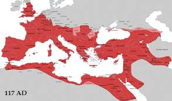
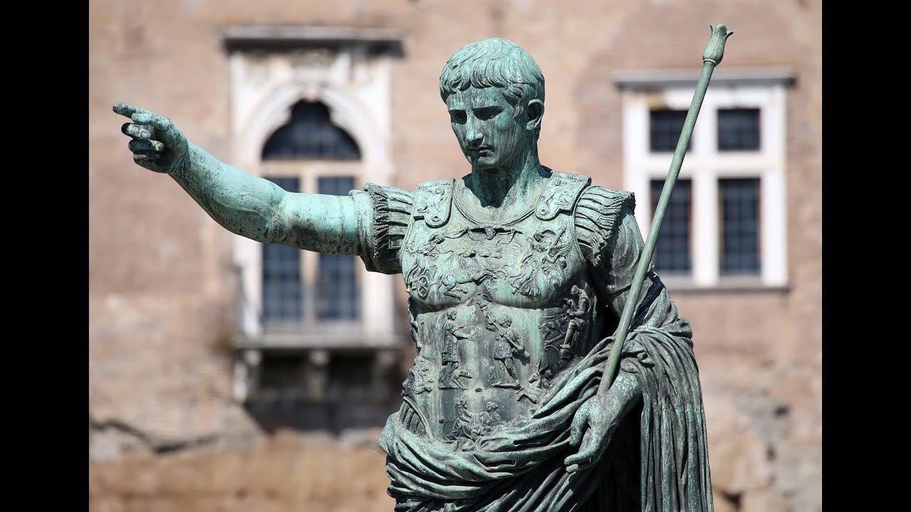
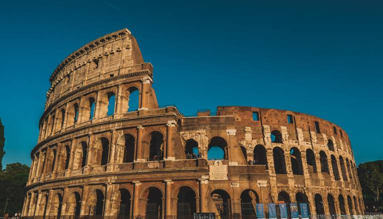

Slava, moč in zgodovina antičnega Rima
Rimsko cesarstvo je bilo eno največjih imperijev v zgodovini.
Začelo se je leta 27 pr. n. št. z vladavino prvega cesarja Avgusta.
V času največjega razcveta je obsegalo velik del Evrope, severne Afrike in Bližnjega vzhoda.
Rimljani so bili znani po cestah, akvaduktih in močni vojski.
Cesarstvo je zaradi notranjih sporov in napadov sčasoma propadlo leta 476.
Rimljani so zgradili ceste, akvadukte in ogromne amfiteatre, kot je Kolosej.
Znani so bili tudi po svojih kopališčih, kjer so se ljudje družili in sproščali.
Uporabljali so latinski jezik, ki je vplival na mnoge današnje jezike.
Prav tako so imeli napreden pravni sistem, ki se uporablja kot osnova še danes.


